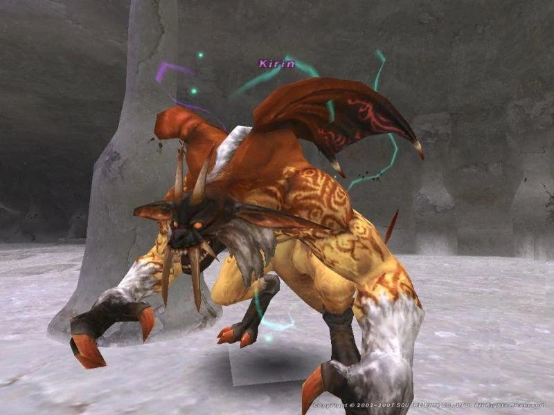
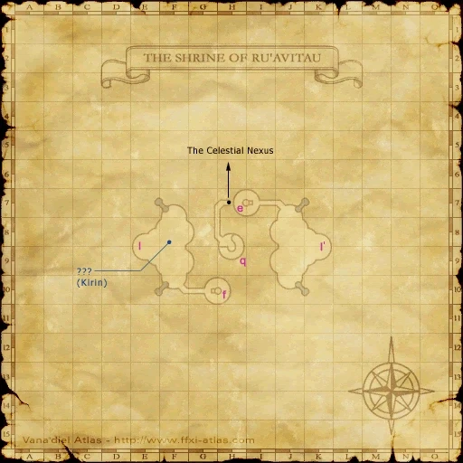

Level 75 reference · Zenith rules
|
Job: Summoner |
 Image source |


|
Zone |
Level |
Drops |
Steal |
Spawns |
Notes | ||||||
|
92 |
1 |
A, L, S, Sc
| |||||||||
|
HP = Detects Low HP; M = Detects Magic; Sc = Follows by Scent; T(S) = True-sight; T(H) = True-hearing JA = Detects job abilities; WS = Detects weaponskills; Z(D) = Asleep in Daytime; Z(N) = Asleep at Nighttime | |||||||||||


Image source
Notes:
- Spawned by trading a Seal of Byakko, Seal of Genbu, Seal of Seiryu, and a Seal of Suzaku to the ??? at (F-8)
- Killable by 18+ level 75 players
- Uses the attacks:
- Summons:
- Astral Flow
- Additional Effect: Earth Damage
- Auto Regen
- Deadly Hold
- Heat Breath
- Tail Smash
- Great Sandstorm
- Great Whirlwind
- Quake
- Rasp
- Sleepga
- Stonega IV
- Stone V
- General Strategy: Kirin is almost always a kited battle. Tanks will need to outrun his constant barrage of TP moves (he almost never does regular melee attacks) and devastating -ga spells. While he is being kited he will stop to summon a 'mini-god' version of Suzaku, Byakko, Genbu and Seiryu (in no particular order). Each mini-god is a full-strength enemy, but with considerably fewer HP than the versions fought in Ru'Aun Gardens. The mini-gods do not drop any treasure. When they are defeated Kirin can be fought alone. Melee damage is lower than against other Tu'Lia gods, and because the fight is often kited most of the damage will come from skillchains done while he stops to cast Stonega IV/Quake, Ranged attacks, Chi Blast, and magic damage such as Black Magic or Diabolos's Nether Blast. He is extremely resistant to most Enfeebling Magic with the exception of Gravity. His Astral Flow SP is the only real danger to an experienced group.
- Alternate Strategy: A more modern method to defeating Kirin is generating so much damage he dies before he can summon any of his sub gods. This "speed-kill" technique most commonly requires many bards and melee jobs to two hour, and normally is successful within the first 3 minutes of the fight. Often this is unattainable without MNK's melee skills and DRKs 2-houring using Kraken Clubs. Before popping Kirin all players should drink poison potions because one Sleepga can waste precious time for any jobs 2-hour. Kirin's low HP but high regen are what makes this possible. If Kirin has time to summon a sub-god this is almost always a sign of failure.
- It is also possible to TP burn Kirin without a 2-hour speed-kill. This typically involves 3 parties full of heavy melees and plenty of healing (inside and outside). One or two tanks are optional. Some groups rotate bards through the melee parties so that the melees have a full set of songs. The Silence effect of Tachi: Gekko is useful for stopping Stonega IV. Melees will die pretty frequently, so it's important to have spares. If the group is small, it is usually a good idea to kite Kirin while a summon is out and have the melees break off and help to kill the summon before going back to Kirin.
Dialogue
Dialogue when appears
Kirin: "I am Kirin, master of the Shijin. The one who stands above all. You, who have risen above your mortal status to contend with the gods... It is time to reap your reward."
Dialogue when defeated
Kirin: "You have transcended your limitations, mortal. I must thank you...You have freed me from this loathsome prison."
Adapted from Eden Wiki: Kirin · Contributors and history · CC BY-SA 4.0. Revision 1975. Layout, links and optional background text adapted for Zenith.